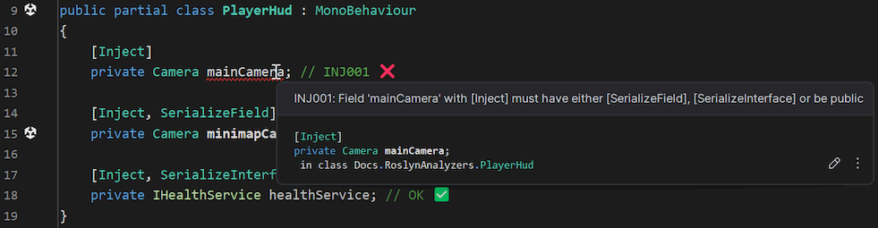
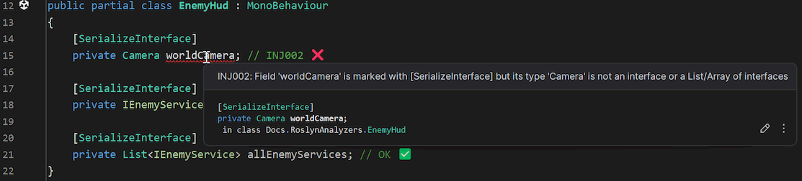
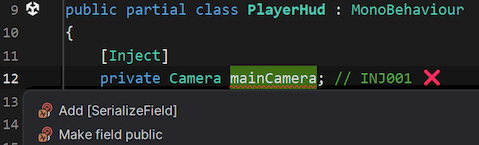
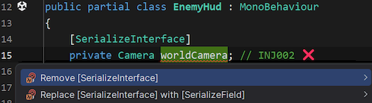
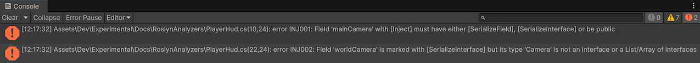

Code analyzers
Saneject ships with Roslyn analyzersRoslyn analyzerCompile-time code analysis component that inspects C# syntax and symbols and reports diagnostics in the IDE and during builds. for common injection attribute mistakes. These checks run during C# analysis, so issues are reported in the editor and during compilation instead of appearing later during an injection runInjection runOne execution of the injection pipeline for a chosen selection, context walk filter, and active set of targets..
Why this exists
Editor-time injectionEditor-time injectionSaneject workflow that resolves dependencies and writes them into serialized objects in the Unity Editor, before entering Play Mode. writes values into serialized members. If an injected member is not serializable in Unity, or if an interface serialization attribute is used on the wrong type, the injection result can be missing or misleading.
The analyzer rules catch those mistakes early and report clear, fixable diagnostics.
Analyzer rules
| Diagnostic ID | Rule | Severity | Category |
|---|---|---|---|
INJ001 |
[Inject] fields must have either [SerializeField], [SerializeInterface], or be public. |
Error | Injection |
INJ002 |
[SerializeInterface] fields must be interface-typed members. Supported shapes are interface, interface array, and one-parameter generic collections of an interface type (for example List<IService>). |
Error | Injection |
Rule details
INJ001: [Inject] must be serializable or public
This rule reports when a field has [Inject] but is neither:
public- marked with Unity's
[SerializeField] - marked with Saneject's
[SerializeInterface]
using Plugins.Saneject.Runtime.Attributes;
using UnityEngine;
public partial class PlayerHud : MonoBehaviour
{
[Inject]
private Camera mainCamera; // INJ001 ❌
[Inject, SerializeField]
private Camera minimapCamera; // OK ✅
[Inject, SerializeInterface]
private IHealthService healthService; // OK ✅
}
INJ002: [SerializeInterface] requires interface types
This rule reports when [SerializeInterface] is placed on a non-interface shape.
using System.Collections.Generic;
using Plugins.Saneject.Runtime.Attributes;
using UnityEngine;
public partial class EnemyHud : MonoBehaviour
{
[SerializeInterface]
private Camera worldCamera; // INJ002 ❌
[SerializeInterface]
private IEnemyService enemyService; // OK ✅
[SerializeInterface]
private List<IEnemyService> allEnemyServices; // OK ✅
}
Code fixes
Saneject also includes Roslyn code fixesRoslyn code fixQuick action linked to a Roslyn analyzer diagnostic that can automatically apply a source-code fix. for both diagnostics. When your IDE supports Roslyn quick actions, the fixes appear directly in the lightbulb menu.
Fixes for INJ001
Add [SerializeField]Add [SerializeInterface](offered when the field type is an interface)Make field public
Fixes for INJ002
Remove [SerializeInterface]Replace [SerializeInterface] with [SerializeField]
IDE support
Roslyn analyzers are supported by most modern IDEs such as JetBrains Rider and Visual Studio.
INJ001 reported inside JetBrains Rider:

INJ002 reported inside JetBrains Rider:

INJ001 code fixes in JetBrains Rider:

INJ002 code fixes in JetBrains Rider:

Unity console output
INJ001 and INJ002 errors are reported to the Unity console as well:

Where the analyzer is loaded from
In the Unity project, Saneject's analyzer assembly is included at:
Assets/Plugins/Saneject/Roslyn/Saneject.Analyzers.dll
It is imported with the RoslynAnalyzer asset label, so Unity treats it as analyzer tooling instead of runtime gameplay code.